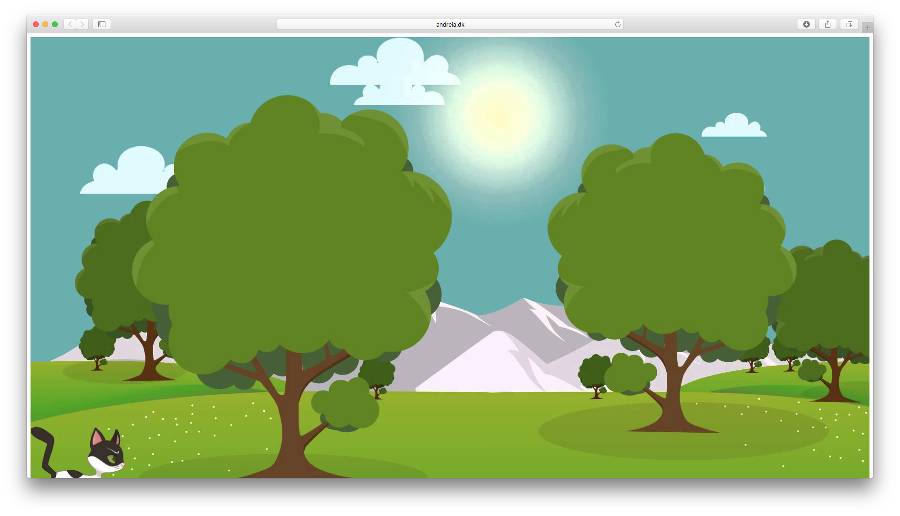
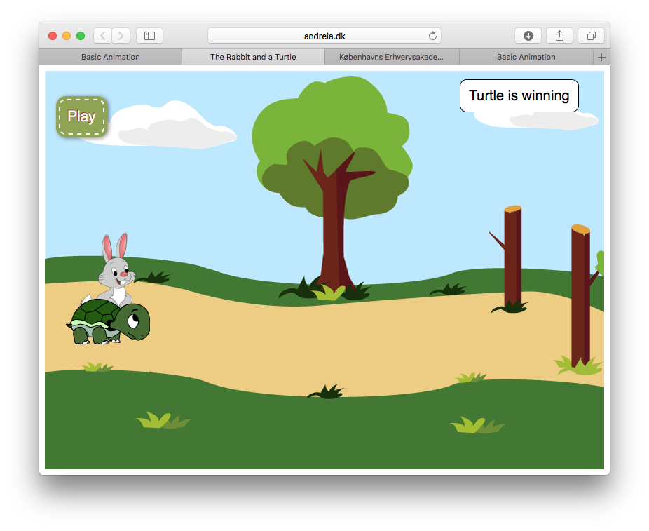
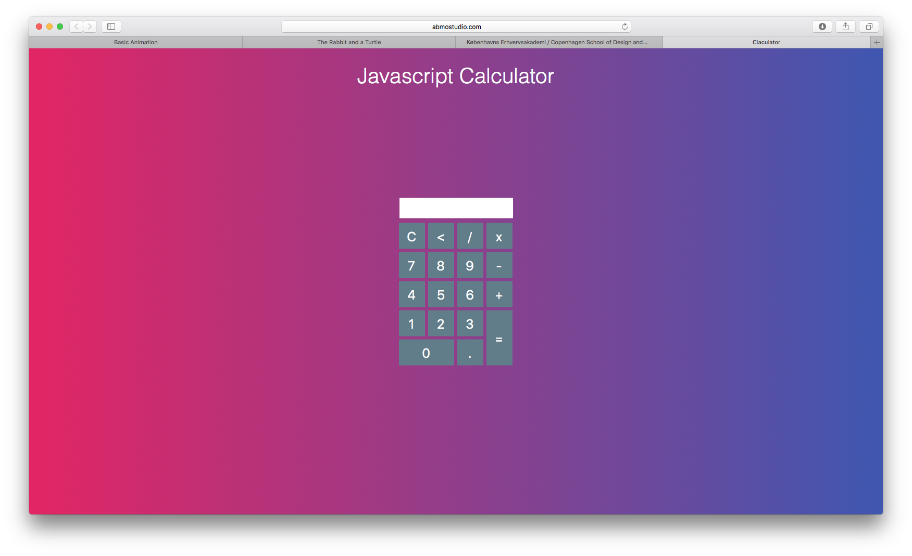
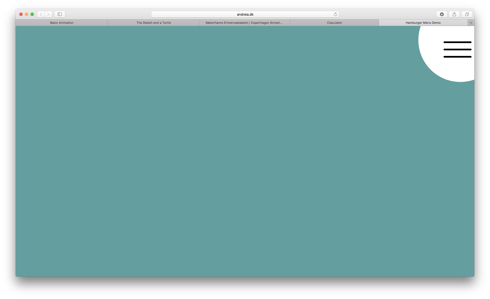
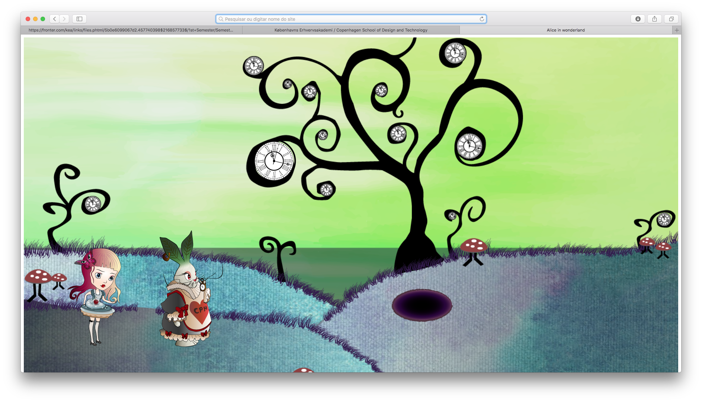

SIMPLE ANIMATION

This was my first website with simple animation. I learned how to code 15 diferent animation in CSS and to make it run with buttons conected with JavaScript. This was a simple assignment that helped us to prepare to the next assigments.
WEB SITESTORYTELLING AND CHARACTER DESIGN

In this assigment I was introduced to the 12 principles of design and character design. I learned how to draw simple character in paper a with simple tecniques, and to give it live in Adobe Illustrator. I also designed the scenario in illustator for this assigment purposes. I also learned how to do a work and sprite sheet and realized its importance. I improved my skills in sketching a storyboard by thinking in camera angles. I also learned how to analyse a narrative curve and apply a new CSS animation through "steps".
PDF TO FINAL WORKINTERACTIVE ANIMATION
GROUP PROJECT

In this project we applplied knowledge of CSS animation, but I also learned how to interact with JavaScript using different event types. I learned how to create a sequence diagram and realized its importance: to be more easy to code JavaScript and follow the story line. We also implemented audio making the character "speak" when the game is being played. I also learned how to use "an if-statement" by making the computer calculate who is winning the race.
WEB SITEPROJECTPOOL DAY 1
GROUP PROJECT

In this assigment we could choose between diferent projects. Me and my partner chose to make a calculator. In order to do so we needed to make a calculator that adds two numbers, add two input fields and a button labeled "add numbers", and return the sum of the numbers typed into the form. We also decided to implement advanced features.
WEB SITEPROJECTPOOL DAY 2
GROUP PROJECT

This time was an animated burger menu. With a little positioning and a few transforms, we could make it expand and transform a burger into a X.
WEB SITEBASIC ANIMATION PROJECT
GROUP PROJECT

This project was a longer project but an exciting one. We needed to create a story where the user could interact with the characters. We had to implement everything that we learned so far and more. For instantance besides drawing characters and code in HTML/CSS and JavaScript, we had to think about the target audience and do a "personas collage". We had to conduct an expert test to be able to improve something that was missing. I also learned a new method of presentation by doing a screencast. With this project and after this theme I gained knowledge in the following areas:
Interaction design:
In this area I learned how to apply CSS animation and implement JavaScript in these animations.
Visualisation:
In this area I learned how to use central design processes for multimedia production, including documentation of the design process. Drawing graphics with a consistent visual expression and a specific style. Sketching and drawing of graphics in Illustrator and Photoshop. Preparation of storyboard, dramaturgical elements, character sheets and animation principles.
Communication:
In this area I learned how to plan and conduct user testing of a multimedia production, to work with a story using the narrative curve and to take the target group into consideration.
Business:
In this area I learned how to develop methods for multimedia production. I also learn the importance of using a Kanban chart when working in group.